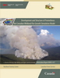
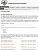

Documentation
|  | Tymstra, C.; Bryce, R.W.; Wotton, B.M.; Taylor, S.W.; Armitage, O.B. 2010. Development and Structure of Prometheus: the Canadian Wildland Fire Growth Simulation Model. Nat. Resour. Can., Can. For. Serv., North. For. Cent., Edmonton, Alberta. Inf. Rep. NOR-X-417. 88 p. [ PDF ] |
|  | COM Programmer Documentation. Generated 2014-09-08. [ On-line ] |